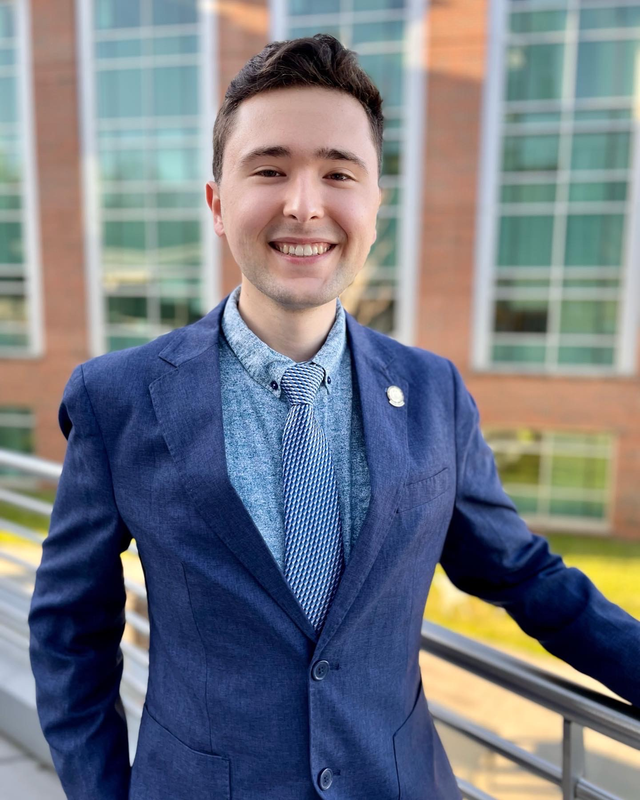

John P Pederson
Biography

John P. Pederson is an alumni of the School of Chemical and Biomolecular
Engineering at the Georgia Institute of Technology. At Georgia Tech, he pursued
various interests and was an active member of the Honors Program living-learning
community, the Tau Beta Pi Engineering Honor Society, and the Georgia Tech Jazz
Combos Program. He also worked to be an involved member of the School of Chemical
and Biomolecular Engineering, where he volunteered as a Peer Mentor, Student
Ambassador, and GT 1000 Team Leader. These on-campus activities provided John
with many opportunities to hone his leadership and interpersonal skills.
Professionally, John has primarily worked in environmental compliance and
research. John has eight months of work experience in the municipal wastewater
industry, four months of work experience in the water utilities industry, three
years of research experience in sustainable flow chemistry, and two years of
research experience in computational chemistry. Through his endeavors, John has
acquired skills in data analysis, laboratory and process safety, and technical
communication.
He graduated in December of 2021 and looks forward to pursuing a graduate degree
with a focus in theoretical chemistry.
Connect